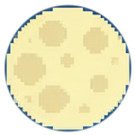
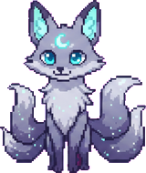
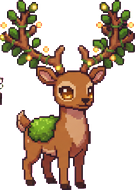
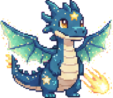

~*~ small cozy games for your pocket ~*~



A cozy pixel pet adventure powered by your real-world steps. Every step you take feeds your pet, and quiet minutes fill its magic. Raise it, battle with it, and watch it evolve into something wonderful.
Questions, bugs, or just want to show off your pet?
pepquestinfo@gmail.com